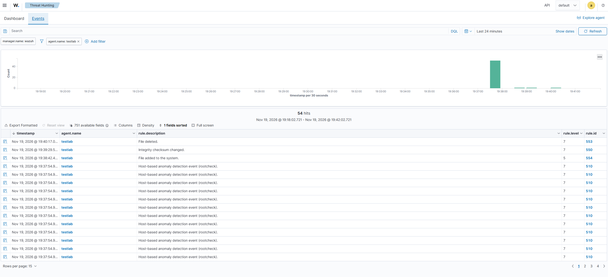
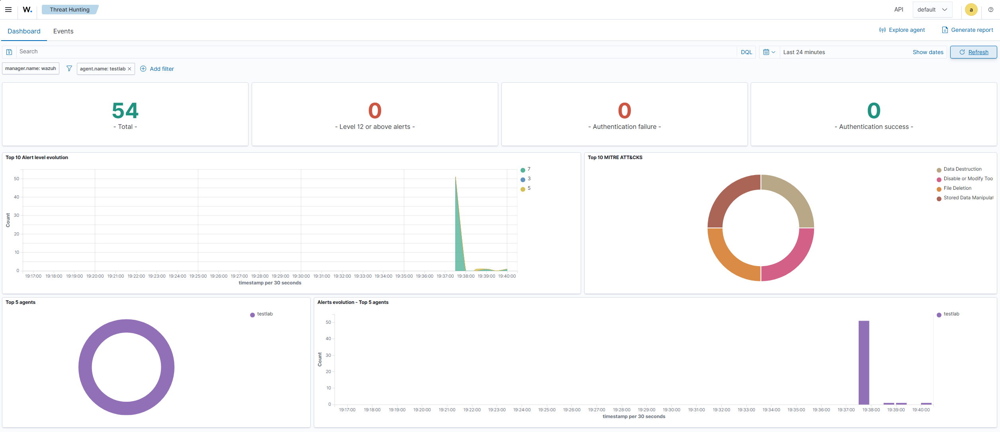

IoT GPS tracker with live map
A Pico W with a GPS module sends its position wirelessly over MQTT to a MariaDB database and shows the route live on a Google Maps map.
status: cybersecurity student · Aarhus, Denmark
I study Cybersecurity at Business Academy Aarhus and previously trained as an IT Technologist. I’m drawn to the practical side of security: understanding how networks and systems work, so they can be monitored, secured and documented.
A Pico W with a GPS module sends its position wirelessly over MQTT to a MariaDB database and shows the route live on a Google Maps map.
A secure company network with VLAN segmentation, VPN, Active Directory and hardening against attacks such as DHCP spoofing.
My own security lab on a Lenovo ThinkCentre M720q: Proxmox as the hypervisor, Wazuh as the SIEM, a test container I “attack” myself to verify detection, and secure remote access with Tailscale and no open ports.
A complete IoT system built from scratch. A Pico W with a GPS module sends its position wirelessly in real time over MQTT. The data is stored in a MariaDB database and shown live on an interactive Google Maps map.
Result: a working end-to-end system. The device could be taken outdoors, and the route was logged and shown live.
The goal was to design, configure and implement a scalable and secure network infrastructure for a simulated mid-sized company with requirements for high uptime, segmentation and protection against cyber threats. Hover over parts of the network, and pick an area below.
A security lab I built at home. A Lenovo ThinkCentre M720q runs Proxmox VE with an Ubuntu VM for Wazuh and small LXC containers for the rest: a test machine on which I deliberately create suspicious activity, and a Tailscale container that gives me secure access to the whole lab from anywhere. Wazuh agents on the server and the containers send logs and events to Wazuh, so I can practise detection on a real network and see whether my tests get caught.



Result: a running homelab with secure remote access, where Wazuh detects failed SSH logins, correlates repeated attempts into a brute force alert and catches tampering with sensitive files in real time on the test container.
All projects were built in isolated test environments. Nothing here contains real addresses or credentials.
Feel free to get in touch if you’d like to hear more about my projects.
ilyasabduhersi@gmail.com